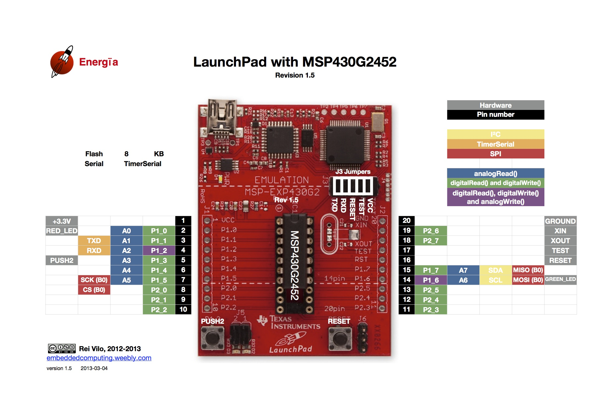
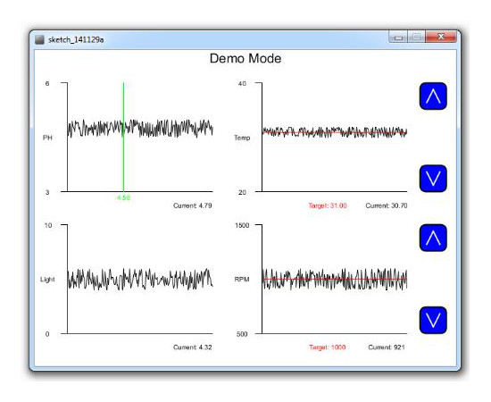

In November of 2015, I was assigned to a team of around thirty people to attempt a challenge that was given by the Engineering Department of UCL. The thirty of us were then split into three sub-teams according to our discipline. Our sub-team consisted of computer scientists and electrical engineers, and our task was to develop the computer systems and mechanical components of a bio-reactor.
This task required me and my fellow computer scientists to work with a microcontroller which we were unfamiliar with. As I had been successful in getting an Engduino to communicate via serial port with a computer in the past, our team leader, Vishal Rajagopal, gave me the task of creating a link between a computer and the microcontroller.
I used Processing as it was an easy way to create a graphical interface that would also be able to work with the serial port. The main challenge was keeping the Processing program in sync with the microcontroller, as at first I simply used a timing system. Eventually this was changed into a communication where exactly one side is reading and exactly one side is writing.
In hindsight, this is definitely not the most efficient method, and I would really like to go back to it to improve it. However, the implementation we had was created within a short time frame and worked reliably.